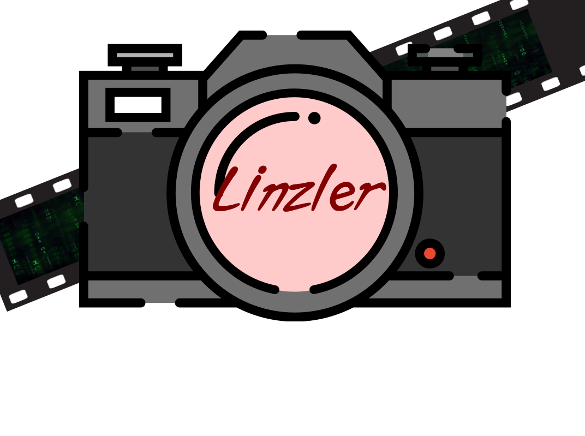

Profile

정보보호학과 18학번 최용준 입니다.
1999년생으로 현재 23살 입니다.
정보보호학으로 취업을 생각 중입니다.
취미는 사진촬영 입니다.
이 사이트의 다른 메뉴에서 공부한 코딩과 촬영한 사진을 확인하실 수 있습니다.
제가 만든 사이트의 배경혹은 로고 이미지로 사용되고 있는 사진은
직접 촬영한 것으로 저작권은 최용준 본인에게 있습니다.
위 사이트에 로고는 사진작가로서의 닉네임 Linzler를 카메라의 렌즈에
코딩을 카메라 뒤의 필름에 넣음으로써 코딩과 사진이 함께함을 의미합니다.
사이트 소개 영상